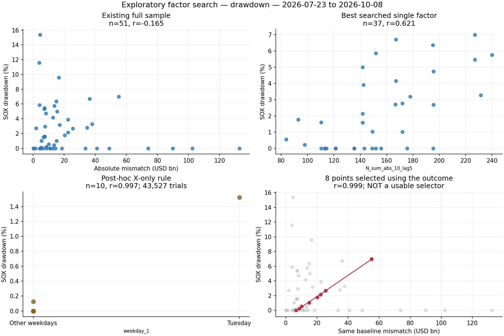
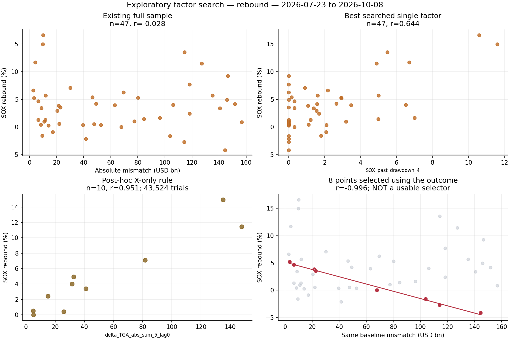
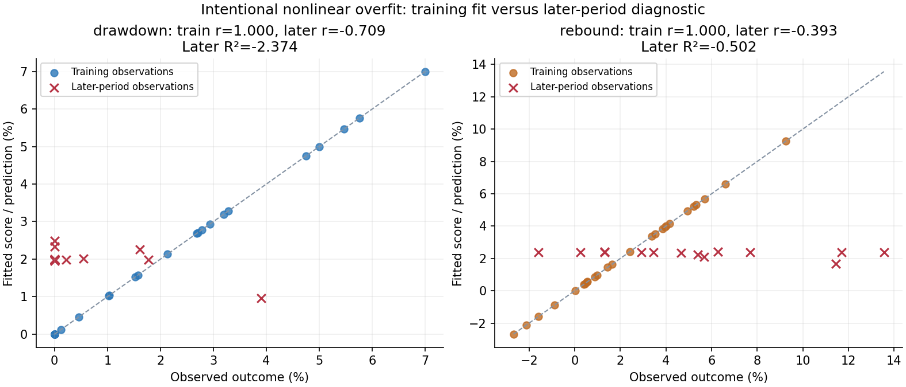

SOX 팩터 탐색과 과적합 실험
2026-10-10 · 개인 비상업 연구 · 자료 2026-07-23~2026-10-08 · 서로 다른 후보 691개 · 목표는 기존 4일 낙폭과 5일째 반등
단일 팩터, 부분 표본 선택, 유연한 비선형 합성 점수가 어느 정도의 표본 내 상관을 만들 수 있는지 비교했습니다. 앞쪽에서 선택한 모델을 2026-09-14 이후 기간에 고정해서 적용한 결과도 함께 기록했습니다.
기호: N은 SOMA를 제외한 국채 액면 순발행 대용치, ΔTGA는 잔액 증감, d는 ΔTGA−N입니다. lag 5는 5거래일 전까지의 값, sum_abs는 일별 절댓값의 합, abs_sum은 부호 있는 합의 절댓값입니다. 금액은 십억 달러, SOX 변동성은 과거 일간 로그수익률(%)의 표준편차입니다.
- 이번 탐색은 사용자가 요청한 과적합 실험입니다. 과거 탐색 표본과 운영 차트는 변경하지 않았습니다.
- 자료는 실제 수집된 55거래일입니다. 원본 14점은 학습에 합치지 않았고, 새 표본의 기준 통계와 좌표를 운영 API와 대조했습니다.
- 전체 표본의 결과를 보고 팩터·기간·임곗값을 선택한 수치는 사후 탐색 성적입니다. 높은 r만으로 재현성이 확인되는 것은 아닙니다.
- 앞쪽 기간에서 선택한 결과도 엄밀한 미래 실험이 아닌 기간 분리 진단입니다. 이미 전체 상관을 본 자료이며 관측창도 중첩됩니다.
- Treasury 입력은 사후 조회·수정 자료입니다. 이벤트 당시 발표되어 있었는지까지 재현한 매매 백테스트가 아닙니다.
- 쿠폰 차감 순유출액의 과거 연속 자료가 없어 해당 팩터는 이번에 검증하지 않았습니다.
- 결측은 결측으로 유지했습니다. 미래 SOX를 입력 팩터로 쓰지 않았습니다. 결과 기반 8점 선정은 별도의 명시적 누설 예시입니다.
- 원시 SOX 종가는 내보내지 않았습니다. CSV에는 파생 팩터와 반응률만 저장했습니다.
4일 낙폭
전체 탐색 최상위: N_sum_abs_10_lag5
sum_abs(N, trailing 10 sessions), lag 5
재무부 입력 최상위: N_sum_abs_10_lag5
sum_abs(N, trailing 10 sessions), lag 5
부분 표본 조건: SOX_vol5 >= 2.845, 팩터 weekday_1
최상위 조건의 편중: {'0.0': 9, '1.0': 1}입니다. 2026-08-04를 빼면 팩터가 상수가 되어 상관을 계산할 수 없습니다. 높은 수치가 한 사건에 의존하는 사례입니다.
달력 제외 조건: SOX_vol5 <= 1.470, 팩터 N_abs_sum_6_lag2. 한 점씩 뺀 r 범위는 0.885~0.943입니다. 이 검사도 사후 선정 편향을 없애지는 않습니다. 이 조건에 해당하는 후기 표본은 7개입니다.
전체 탐색에서 찾은 후보의 기간별 관계
이 두 후보는 전체 결과를 보고 골랐습니다. 위 기간별 수치는 재현성 진단이며 독립 검증 성적으로 읽지 않습니다. 후기에도 관계가 남는 후보를 모두 실패한 것으로 처리하지 않았습니다.
앞쪽 기간에서 고른 뒤 고정한 결과
학습 이벤트는 2026-09-04까지, 결과 관측은 2026-09-11까지입니다. 후기 이벤트는 2026-09-14~2026-10-02입니다. 경계에서 4개 이벤트를 제외했습니다.
위 학습/후기 r은 고정한 모델의 예측값과 실제 결과 간 상관입니다. 전체 탐색 팩터의 원래 부호 있는 r과 구분합니다. R²는 후기 실제 평균을 기준으로 계산하며 음수이면 그 평균보다 제곱오차가 큽니다.

5일째 반등
전체 탐색 최상위: SOX_past_drawdown_4
100*(1-P_t/max(P_(t-3)..P_t))
재무부 입력 최상위: N_sum_5_lag3
sum(N, trailing 5 sessions), lag 3
부분 표본 조건: abs_delta_TGA <= 7.445, 팩터 delta_TGA_abs_sum_5_lag0
달력 제외 조건: abs_delta_TGA <= 7.445, 팩터 delta_TGA_abs_sum_5_lag0. 한 점씩 뺀 r 범위는 0.945~0.963입니다. 이 검사도 사후 선정 편향을 없애지는 않습니다. 이 조건에 해당하는 후기 표본은 1개입니다.
전체 탐색에서 찾은 후보의 기간별 관계
이 두 후보는 전체 결과를 보고 골랐습니다. 위 기간별 수치는 재현성 진단이며 독립 검증 성적으로 읽지 않습니다. 후기에도 관계가 남는 후보를 모두 실패한 것으로 처리하지 않았습니다.
앞쪽 기간에서 고른 뒤 고정한 결과
학습 이벤트는 2026-09-03까지, 결과 관측은 2026-09-11까지입니다. 후기 이벤트는 2026-09-14~2026-10-01입니다. 경계에서 5개 이벤트를 제외했습니다.
위 학습/후기 r은 고정한 모델의 예측값과 실제 결과 간 상관입니다. 전체 탐색 팩터의 원래 부호 있는 r과 구분합니다. R²는 후기 실제 평균을 기준으로 계산하며 음수이면 그 평균보다 제곱오차가 큽니다.

유연한 모델이 표본을 외우는 경우
순발행·TGA 증감·과거 SOX 5일 수익률·과거 변동성의 네 입력을 비선형으로 조합했습니다. 표준화와 모델 선택은 학습 자료에서 수행했습니다. 36개 설정 중 학습 적합도를 최대로 만드는 설정을 선택했습니다.

절차 참고: 자료 누설과 팩터 선택 · 시간 순서 및 구간 간격
감사 검사: 미래 입력을 바꿔도 앞쪽 691개 팩터 값이 그대로이며, 후기 결과를 바꿔도 앞쪽 팩터 선택은 그대로였습니다. 학습 결과창과 후기 시작일 사이 겹침도 없음을 확인했습니다.
상세 기록: 결과 JSON · 낙폭 팩터 순위 CSV · 반등 팩터 순위 CSV · 파생 팩터 전체 행렬 · 팩터 정의